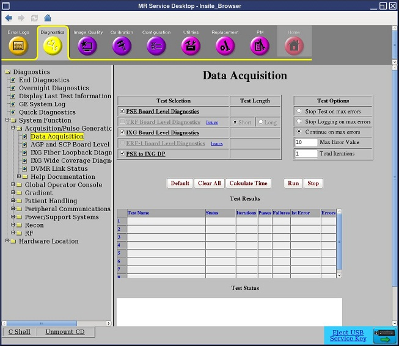
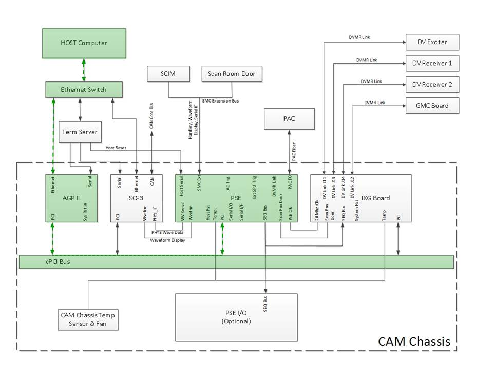

PSE Board Level Diagnostic
1 Disclaimer
Depending on your service agreement, not all service tools, diagnostics, and utilities referenced in this document may be accessible. Contact your sales person for information on available service license packages.
2 Diagnostic Description
2.1 Diagnostic Path
Diagnostics > System Function > Acquisition/Pulse Generation > Data Acquisition
Diagnostics > Hardware Location > System Cabinet > CAM > Data Acquisition
Figure 1. PSE Board Level Diagnostics

2.2 Purpose
The PSE Board Level Diagnostic tests the functionality of the board. It does not test any interface to the board.
See PSE to IXG DP Diagnostics and PSE to RRX+DTX Datapath Diagnostic to test the interface between the PSE board and the XGD (gradient), DTX (exciters), and RRX (receivers).
2.3 Components Tested
PSE board functionality
2.4 Requirements
No requirements.
2.5 Block Diagram
Figure 2. PSE Block Diagram

To view or print a larger view of this diagram, click 11942524.pdf.
2.6 Test Sequence
-
Click Calculate Time to get an estimate of the time it will take to run the selected diagnostics.
-
Short Tests: The short test performs a pattern of walking ones and zeros.
-
Long Tests: The long test performs a pattern of walking ones, walking zeroes, 0xaaaa, 0x5555, and possibly others. As a result, selecting the long test results in a more exhaustive test. If the problem is highly intermittent, try a long test.
note:Do not change the Test Options settings from their default settings unless instructed to do so by a GE Healthcare engineer. There are very few circumstances when these settings ever need to be changed.
-
-
Click Run to initiate the test.
2.7 Expected Results
- Test Results
-
Diagnostic results display the test name with a status of PASS or FAIL. If you receive a FAIL status, click the error number in the 1st Error column to view error message details.
- Test Status
-
This window informs you of the progress of the test from the initial scan to the completed diagnostic.
2.8 Finalization
Before scanning, perform a TPS reset.